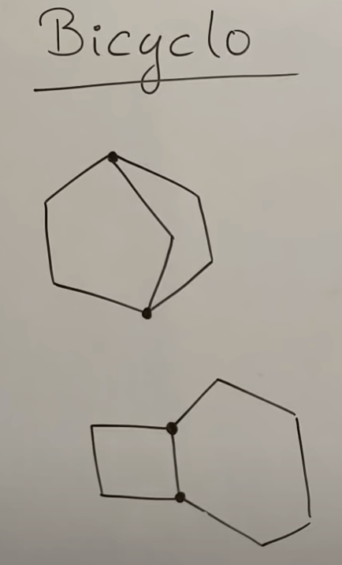
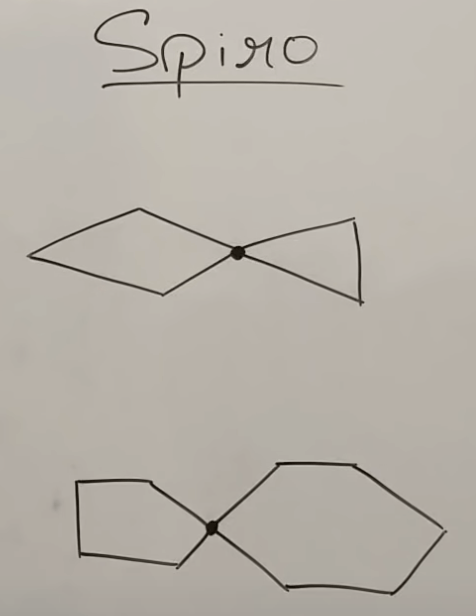
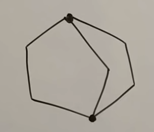

IUPAC Nomenclature : Naming Of Bicyclo and Spiro Compounds
YOUTUBE PLAYLIST LINK
ALL TOPICS IN THE PLAYLIST :
- Some Basic Principles and Naming Of Alkanes
- Complex Substituents and Cycloalkanes
- Naming Of Alkenes and Alkynes
- Functional Groups with Secondary Suffix
- Naming Of Alcohols
- Naming Of Aldehydes and Ketones
- Naming of Carboxylic Acids and Acid Halides
- Naming Of Acid Amides and Esters
- Naming of Cyanides, Amines, and Ethers
- Naming of Polyfunctional Compounds (More than One Functional Group)
- Naming Of Aromatic Compounds - Benzene Rings
- Naming Of Bicyclo and Spiro Compounds
NAMING OF BICYCLO AND SPIRO COMPOUNDS
YOUTUBE LECTURE LINK
TOPICS IN THIS LECTURE :
-
Introduction
-
Bicyclo :
- Bicyclo has two cycles.
- There are two carbons that are common to both the cycles.
-
Example:

-
Spiro :
- Spiro also has two cycles.
- There is one carbon that is common to both the cycles.
-
Example :

-
Bicyclo :
-
Naming of Bicyclo compounds
-
Naming rules with an example :
- The line joining the two common C-atoms is called the "bridge and the two C-atoms are called "bridge head carbon".
- The prefix for Bicyclo is "bicyclo" followed by square brackets ("[ ]").
- There are actually three chains: the right, left and the bridge.
- Count the number of C-atoms in each chain, excluding the bridge heads.
- While naming, go from the largest to the smallest of the above three chains.
- In the above figure, the right chain has two, the left has two, and the bridge chain has one.
- right = 2, left = 2, bridge = 1, and total number of carbons including the bridge heads is 7.
- The name will be bicyclo[2.2.1] heptane
- Substituent naming rules : : start numbering from the bridge head carbon, then largest chain, and then smallest chain.
- Do not change this rule upon seeing the functional group. It should go from largest to smallest (and then bridge) only.
- Within the chain, as usual, number in a way to give the FG/substituent smallest number.
- Can pick any bridge head carbon to start the numbering.
- Example : question 4 below.

10-bromo-5-cyano-11-ethyl-6-formyl bicyclo [7.2.0] undecane-4-carboxylic acid -
Naming rules with an example :
-
Naming of Spiro compounds
-
Naming rules with an example :
- The prefix for spiro is "cyclo" followed by square brackets ("[ ]").
- The common C-atom is called the "\(\text{4}^o\) Carbon" as there are 4 C-atoms attached to it.
- Count the number of C-atoms in each chain attached to this common C-atom (excluding the common C-atom).
- While naming, go from the smallest to largest chain.
- In the above figure, the smaller right chain has two and the larger left has three.
- The name will be cyclo[3.2] hexane
- Numbering of spiro in case of substituents / functional group : numbering starts from the \(\text{4}^o\) Carbon, and goes from smallest to largest.
- Within the chain, as usual, number in a way to give the FG/substituent smallest number.
- Do not change this rule upon seeing the functional group. It should go from smallest to largest only.
- After naming the smallest chain, add number to the \(\text{4}^o\) Carbon.
- Example : Question 2 below.
9-ethyl-6-formyl spiro[4.5] dec-3-ene-1-carboxamide -
Naming rules with an example :